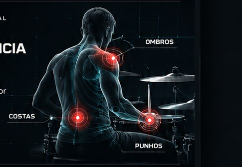

01 / PREPARAÇÃO
AQUECIMENTO
Prepare o corpo para a rotina de estudos, ensaios e apresentações.
Educação em saúde e preparação corporal aplicada à bateria.
Entenda como o seu corpo funciona no instrumento e aprenda a se preparar melhor para a rotina de estudos, ensaios e shows.
EXPLORAR REGIÕES →
Consciência dos movimentos durante a prática musical.
Explore o que está no conteúdo atual do método: aquecimento, postura, alongamento, economia de energia, flexibilidade, compensações e relaxamento.
Prepare o corpo para a rotina de estudos, ensaios e apresentações.
Conheça fundamentos de postura e ergonomia aplicados à bateria.
Explore práticas educativas de alongamento e flexibilidade.
Conteúdo online e certificado de conclusão.
CONHECER O CURSO →